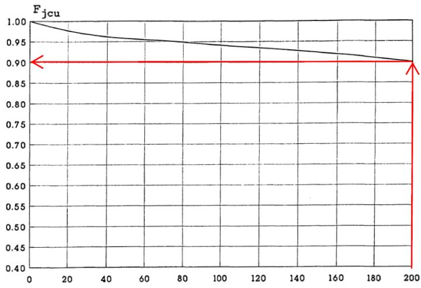
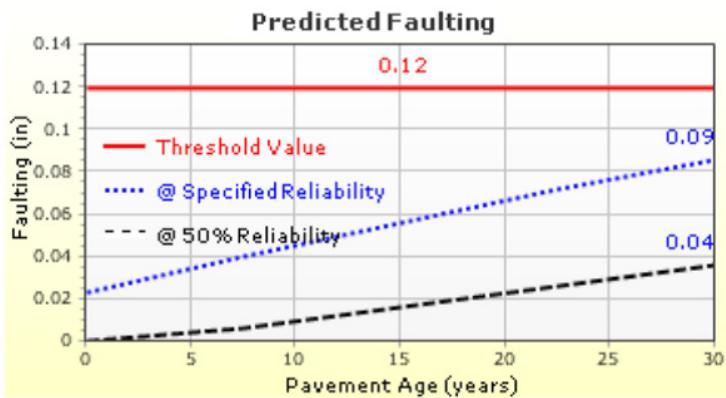
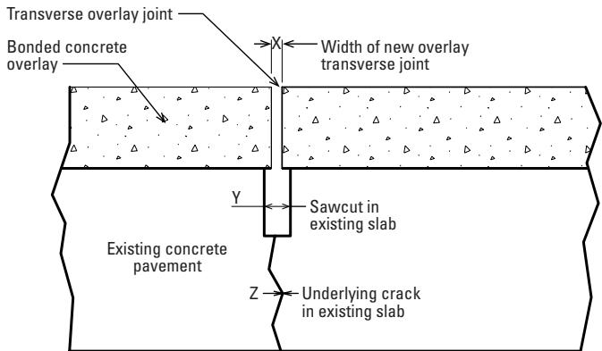
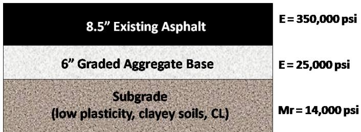
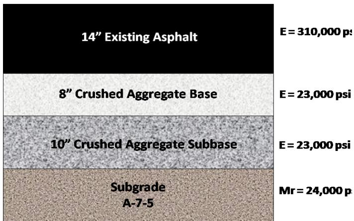
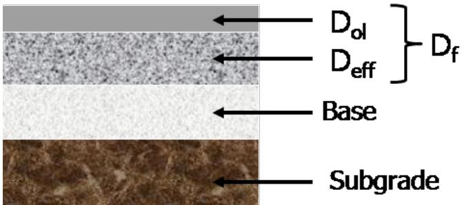

Resilient Modulus and Joint Spacing
Resilient modulus is the stiffness parameter that characterizes the strength of each supporting layer—whether a chemically‑stabilized base, an un‑stabilized layer, or the underlying soil—and is entered as a dynamic k‑value or computed by the Foundation Support module in AASHTOWare Pavement ME Design. Joint spacing specifies the transverse joint configuration for Jointed Plain Concrete Pavements (or its omission for CRCP) and, together with dowel reinforcement, governs load transfer and faulting behavior. By calibrating these two inputs, designers model the interaction between a new concrete overlay and the existing structure so that the overlay can satisfy reliability‑based performance targets for slab cracking, joint fault magnitude, and ride quality over its 20‑year design life [2][4][1].
Sources (5)
Purpose and design objectives
The engineering problem addressed by specifying resilient modulus and joint spacing is to provide a concrete overlay that can sustain traffic loads while meeting reliability‑based performance targets for slab cracking, joint faulting, and ride quality over the design life. The guides state that “Resilient modulus (dynamic k‑value) and joint spacing are captured to define the existing pavement’s support conditions and joint configuration so that a bonded concrete overlay can be designed with adequate structural capacity, load transfer, and durability.” For unbonded overlays, “The design of an unbonded concrete overlay uses joint spacing and foundation support properties to ensure the overlay can carry traffic loads without excessive faulting.” Across both sources, the design is calibrated to keep the pavement within allowable limits—“The concrete overlay design is aimed at satisfying a reliability‑based performance target that restricts slab cracking, joint faulting, and ride‑quality deterioration over the 20‑year design life under increasing truck traffic,” and “To meet these limits, the stiffness of the underlying layers—characterized by their resilient modulus—and the chosen joint spacing are calibrated so the overlay can stay within the allowable percentages for cracking, joint fault magnitude, and terminal IRI while achieving a 90 % reliability.” Thus, resilient modulus characterizes layer stiffness and joint spacing controls load distribution, together addressing the need to maintain ride quality and structural integrity of the overlaid section at a high reliability level. [2][4]
The following figure illustrates the existing pavement cross-section that serves as the basis for these resilient modulus and joint spacing considerations.
 Summary of Existing Pavement Cross-Section. [2]
Summary of Existing Pavement Cross-Section. [2]
The figure displays a layered pavement structure consisting of an existing asphalt surface, crushed aggregate base and subbase layers, and the underlying soil subgrade.
[2] — 1. Introduction (pp. 26–67); [4] — App. B (pp. 121–122)
The design “must achieve satisfactory serviceability by keeping the pavement smooth, limiting faulting, and restricting the proportion of cracked slabs” and it “must meet serviceability and durability targets that govern the required concrete stiffness (resilient modulus) and joint layout.” Serviceability limits include a terminal IRI at or below 172 in/mi; structural and durability limits require “slab cracking is limited to ten percent”, “joint faulting cannot exceed one‑tenth of an inch”, and for continuously reinforced overlays “allowable punchouts are capped at ten per mile”. These performance limits drive the selection of a 15‑ft joint spacing (with dowels or tied shoulders as appropriate) and appropriate resilient modulus values. All criteria are evaluated at high reliability levels (90 % or 95 %), thereby meeting functional, structural, durability, safety and serviceability objectives. [2][4]
[2] — 1. Introduction (pp. 56–67); [4] — App. B (pp. 121–122)
Scope and applicability
The resilient‑modulus and joint‑spacing design framework is used for concrete pavement systems, covering both Jointed Plain Concrete Pavement (JPCP) and Continuously Reinforced Concrete Pavement (CRCP). “The resilient‑modulus‑and‑joint‑spacing design approach is appropriate for concrete‑overlay projects on existing pavements where the engineer must model the interaction between the new slab and the underlying structure.” It is applied to JPCP overlays—both bonded and unbonded—by specifying the original transverse joint spacing and dowel‑bar layout, while “for Continuously Reinforced Concrete Pavement (CRCP) overlays where steel reinforcement replaces joint data”. Joint spacing is a selectable parameter only for JPCP, where dowel diameter, dowel spacing, joint spacing and sealant type are defined; heavy‑traffic projects often adopt shorter joint spacings (12–15 ft) and 1.25‑in. dowels spaced at about 12 in. to ensure load transfer. The method accommodates a range of base conditions: granular or subgrade bases are treated as “no friction” (unbonded), while asphalt or cement‑treated bases may be modeled as bonded, with interface friction and erodibility defined accordingly. “Resilient modulus serves as the strength property for the stabilized layer when chemical stabilizers are employed, for non‑stabilized layers, and for the underlying soil that supports any concrete overlay,” and the resilient modulus entry—either a user‑provided dynamic k‑value from deflection testing or an estimated value calculated by the software—serves as the foundation support parameter for any pavement type evaluated in AASHTOWare Pavement ME Design. [1][2]
The following figure illustrates the adjustment factor used for unbonded overlays in these pavement systems.

Adjustment factor for unbonded concrete overlays plotted against deteriorated transverse joints and cracks per mile. [2]The figure displays a graph of the $F_{jcu}$ adjustment factor on the vertical axis, which decreases as the density of deteriorated transverse joints and cracks increases along the horizontal axis.
[1] — Ch. 3 (p. 63); [2] — 1. Introduction (pp. 26–66)
When the proposed overlay is a continuously reinforced concrete pavement (CRCP), the design workflow shifts away from joint spacing and instead requires input of steel reinforcement, making the joint‑spacing approach unsuitable. In contrast, for jointed plain concrete pavements (JPCP) the software expects joint spacing and dowel data, so the presence of CRCP dictates a different design method. Additionally, the choice between “No friction” and “Full friction” options for the PCC‑base interface reflects whether the existing slab is unbonded or bonded, influencing how foundation support is modeled but not replacing the need for joint information in JPCP designs. [2]
[2] — 1. Introduction (pp. 26–27)
Design inputs and requirements
The design of concrete overlays is governed by the AASHTO Pavement ME Design software analysis, which requires that the proposed configuration satisfy specified performance criteria. Across the guides, joint spacing is constrained to fifteen feet for Jointed Plain Concrete Pavement (JPCP) options, with steel dowels sized at 1.25 in. or 1.5 in., and tied concrete shoulders are prescribed when applicable. Input parameters include subgrade resilient moduli of eighteen‑thousand psi for granular base layers and eight‑thousand psi for A‑7‑6 soils. Performance requirements impose limits of ten percent slab cracking, a joint faulting tolerance of one‑tenth inch, a terminal IRI not to exceed one hundred seventy‑two inches per mile, and, for CRCP designs, punchouts limited to ten per mile. Reliability targets are set at ninety percent in some cases and at a higher level of ninety‑five percent for the smoothness, faulting, and slab‑cracking criteria. [2][4]
[2] — 1. Introduction (p. 67); [4] — App. B (pp. 121–122)
Design methods and criteria
The design and analysis of concrete overlays are performed with the mechanistic‑empirical AASHTOWare Pavement ME Design software. Resilient modulus is incorporated through the Foundation Support module, which can either compute a subgrade reaction k‑value from the soil’s resilient modulus or accept a user‑supplied dynamic k‑value obtained by pavement deflection testing and back‑calculation. The guides describe two alternative procedures: an automatic conversion of MR to a k‑value (default) or manual entry of a measured k‑value. When the manual route is chosen, the required input is a dynamic k‑value that must be derived from field tests; this value is often adjusted with an empirical factor of 0.35 applied to the back‑calculated subgrade MR to produce an equivalent laboratory‑scale modulus (e.g., “0.35*backcalculated Mr (psi): 8,400.”).
Joint spacing is entered as a design property on the JPCP Design Properties screen. The user specifies the transverse concrete joint spacing—commonly in the range of 12–15 ft for unbonded overlays—and provides dowel or steel reinforcement details when a CRCP overlay is considered. Existing joint patterns can be overridden by the selected overlay configuration, and interface conditions such as full‑friction contact are also defined at this stage.
The software combines the resilient modulus values of existing layers (e.g., 18 000 psi for a granular base and 8 000 psi for subgrade) with traffic inputs (ESALs, vehicle class distribution) to predict performance. Reliability‑based performance criteria are applied at a specified confidence level (typically 90 % or 95 %). The guides cite failure limits of 10 % slab cracking, 0.10 in. joint faulting, and a terminal IRI of 172 in/mi. Predicted smoothness, faulting, and percent slabs cracked are compared against these thresholds to confirm that the chosen configuration meets required performance.
Key procedural steps and tools across the guides include: 1. Obtain a dynamic k‑value from deflection testing and back‑calculation (or let the software compute it). 2. Apply the empirical conversion factor 0.35 to back‑calculated subgrade MR when needed. 3. Enter joint spacing and dowel/steel reinforcement data via the JPCP Design Properties menu – “The JPCP Design Properties menu is used to enter the joint spacing and dowel inputs that correspond to the existing pavement.” 4. Select full‑friction contact or other interface conditions as required. 5. Run AASHTOWare Pavement ME Design analysis, using the Foundation Support module – “The Foundation Support menu provides the option to have AASHTOWare Pavement ME Design estimate the modulus of subgrade reaction (default) or to have the user enter it manually.” and, when manual entry is used, provide the dynamic k‑value – “if a value is to be entered manually, AASHTOWare Pavement ME Design requires the dynamic k‑value, which is determined through deflection testing and backcalculation.” 6. Evaluate overlay performance against reliability‑based criteria (smoothness, faulting, slab cracking) at the chosen confidence level. [2][4]
The following figure illustrates the predicted faulting performance resulting from this design process.

Predicted faulting over pavement age for an unbonded overlay design. [2]The figure displays a plot of predicted faulting in inches against pavement age in years, showing the progression of distress over time.
[2] — 1. Introduction (pp. 26–66); [4] — App. B (pp. 121–122)
The guides require unbonded concrete overlays to use a transverse joint spacing of fifteen feet, which is shorter than the spacing typically used in new pavements, and to offset overlay joints at least three feet from any existing pavement joints. The design assumes a “no friction” condition at the interface, representing an unbonded state, and specifies 1.25‑in dowels placed at 12‑in intervals with tied concrete shoulders supporting the edges. Overlay thicknesses of 8.5–9 in combined with the fifteen‑foot joint spacing and dowel configuration must satisfy performance criteria for smoothness, faulting, and percent slabs cracked. The performance limits are set to no more than ten percent slab cracking, joint faulting not exceeding one‑tenth of an inch, and a terminal IRI of 172 in/mi. These limits must be met with a reliability target of ninety percent in some guidance and ninety‑five percent in other guidance; the reliability requirement is applied through AASHTOWare Pavement ME Design. No explicit resilient‑modulus threshold is imposed on the new concrete overlay itself, although the analysis uses existing layer moduli (e.g., a granular base with a resilient modulus of 18 000 psi and a subgrade of 8 000 psi) as inputs. The guides do not prescribe additional factors of safety beyond the stated reliability targets. [2][4]
The figure below illustrates the specific dimensional requirements for the concrete overlay joint relative to the existing pavement cracks.

the figure.7 COC–B joint detail showing the widths of the overlay joint, sawcut, and underlying crack. [4]The figure illustrates a cross-section of a bonded concrete overlay placed over an existing concrete pavement slab. It depicts the alignment between the transverse joint in the new overlay and the sawcut in the underlying structure, highlighting that the width of the new overlay transverse joint (X) must be equal to or greater than the crack width in the existing slab. This detail demonstrates how joint spacing and alignment are managed during construction to ensure proper load transfer and prevent faulting.
[2] — 1. Introduction (pp. 32–67); [4] — App. B (pp. 121–122)
Structural section and dimensions
The guides state “existing concrete pavement transverse joint spacing is 15 ft” and require “offsetting the overlay joints a minimum of 3 ft from the existing pavement joints”. Joint spacing recommendations include “joint spacing of 12 ft”, “ranges from 12 to 15 ft”, and “joint spacing was selected to be 15 ft”. Overlay thicknesses are given as “overlay 9 in. thick”, “overlay 8.5 in. thick”, and “Both overlays were designed to be 10 in. thick.” Reinforcement details include “1.25 in. dowels spaced at 12 in.”, “1.5 in. steel dowels”, “typical values of 0.6 percent to 0.75 percent of steel, a bar diameter of 0.625 to 0.75 in., and steel depths of 3.5 in. to mid-depth”, and “0.7 % steel content using No. 6 bars placed 3.5 in. below the slab surface”. The existing pavement description is “existing 8 in. thick jointed plain concrete pavement” supported by “a 10 in. granular base layer with a resilient modulus of 18,000 psi” over “an A‑7‑6 subgrade soil with a resilient modulus of 8,000 psi”. Shoulder provisions are noted as “tied concrete shoulders” and “Asphalt shoulders are included”. No explicit dimensions are provided for edge‑support conditions. [2][4]
The following figure illustrates the summary of existing pavement cross-section details discussed above.

Summary of Existing Pavement Cross-Section. [2]The figure displays a schematic cross-section of an existing pavement structure consisting of three distinct layers: an asphalt surface, a granular base, and the underlying soil subgrade.
[2] — 1. Introduction (pp. 32–67); [4] — App. B (pp. 121–122)
The selection of thickness, joint spacing, and related details is driven by the performance predictions from AASHTOWare Pavement ME. The design proceeds by running the analysis and adopting the overlay thickness and joint spacing that the model predicts will satisfy the smoothness, faulting and slab‑cracking limits at the required reliability; in the example the analysis indicated a 9‑inch‑thick concrete overlay with joints spaced 15 ft (using dowels) meets those criteria. A comparable result is obtained when the analysis indicates an overlay 8.5 in thick with a joint spacing of 15 ft, using 1.25‑in dowels and tied concrete shoulders, also satisfies the required smoothness, faulting and slab‑cracking performance criteria at the specified reliability level. [2]
The following figure illustrates the predicted faulting performance for a specific overlay configuration analyzed using AASHTOWare Pavement ME.
 Predicted faulting of a concrete overlay over pavement age. [2]
Predicted faulting of a concrete overlay over pavement age. [2]
The analysis predicts that an overlay with specific joint spacing and no dowels will perform satisfactorily in terms of faulting limits over its design life. This visualization demonstrates how the resilient modulus inputs for supporting layers are used to model load transfer and predict performance metrics like fault magnitude.
[2] — 1. Introduction (pp. 56–67)
Materials and mixture design
Joint spacing must be defined as part of the JPCP joint‑detail inputs, together with dowel diameter, dowel spacing and sealant type. For the overlay slab, a typical joint spacing of 15 ft is paired with 1.5‑in. steel dowels as joint reinforcement. The resilient modulus is treated as a strength parameter that must be supplied for each structural layer where it applies – the chemical‑stabilized layer, the non‑stabilized layer, and the underlying soil. Backcalculated E (psi) for asphalt and base/subbase: 310,000 and 23,000, respectively. The existing JPCP was supported by a 10 in. granular base layer with an resilient modulus of 18,000 psi and an A‑7‑6 soil with a resilient modulus of 8,000 psi. In the software, users also enter the dynamic k‑value (modulus of subgrade reaction) and select a friction condition based on the base material (“No friction” for granular or subgrade; “Full friction” for asphalt or cement‑treated bases). No specific mixture proportions are required for these inputs. [1][2][4]
The figure below illustrates the summary of this existing pavement cross-section.

Summary of Existing Pavement Cross-Section. [2]The figure displays a schematic cross-section of an existing pavement structure consisting of four distinct layers: asphalt, crushed aggregate base, crushed aggregate subbase, and subgrade soil.
[1] — Ch. 3 (p. 63); [2] — 1. Introduction (pp. 26–53); [4] — App. B (pp. 121–122)
Structural details and interfaces
The overlay design process requires specifying transverse joint spacing, dowel bar geometry, reinforcement ratios, and interface conditions. “The JPCP Design Properties menu is used to enter the joint spacing and dowel inputs that correspond to the existing pavement.” Joint spacing for existing concrete pavements is commonly 15 ft (existing concrete pavement transverse joint spacing is 15 ft), while unbonded overlays often start with a shorter spacing of about 12 ft (joint spacing of 12 ft is initially selected) because “recommended joint spacing for unbonded overlays is typically shorter than the spacing for new pavements, which usually ranges from 12 to 15 ft.” Joints should be offset at least 3 ft from existing joints (offsetting the overlay joints a minimum of 3 ft from the existing pavement joints). Load transfer is provided by steel dowels; typical dimensions are 1.25 in. diameter on 12‑in centers (dowel bars 1.25 in. in diameter every 12 in.) and may be increased to 1.5 in. for higher demand (joint spacing was selected to be 15 ft with 1.5 in. steel dowels). Dowels are optional in the first iteration of an unbonded overlay (No dowels or PCC tied shoulders are included for load transfer in the first iteration) but can be added if faulting occurs (Dowels may not be required, but, if needed to address faulting, the spacing and diameter are determined following the same guidelines as for new JPCP). For continuously reinforced concrete pavement (CRCP) overlays, “For CRCP overlays, steel reinforcement for the proposed overlay is input instead of joint information,” with reinforcement ratios of 0.6–0.75 % steel (0.6 percent to 0.75 percent of steel, a bar diameter of 0.625 to 0.75 in., and steel depths of 3.5 in. to mid-depth) or 0.7 % using No. 6 bars placed 3.5 in. below the surface (design steel content was 0.7% with No. 6 bars placed at 3.5 in. from the slab surface to the top of the steel). The overlay‑base interface is modeled as “No friction” when the base is granular or unbonded (For the existing PCC-base interface, the “No friction” option is selected when the base consists of granular materials or subgrade to indicate that the existing PCC slab and the base are unbonded) and as “Full friction” for bonded bases such as asphalt or cement‑treated layers (Other base types, such as asphalt or cement-treated bases, are more likely to be bonded to the existing concrete slab, and the user selects the “Full friction” option and provides the estimated number of months that the bond will last). Finally, material strength is represented by resilient modulus values assigned to stabilized, non‑stabilized, and underlying soil layers (Strength (resilient modulus)), and no additional load‑transfer elements beyond the defined joints and reinforcement are required (JPCP joint details (dowel diameter, dowel spacing, joint spacing, and sealant type); CRCP design details (percent steel, bar diameter, steel depth, and crack spacing)). [1][2][4]
The following figure illustrates the interface where these joint spacing and dowel inputs are specified for existing pavements.
 Screen Capture of AASHTOWare Pavement ME Design JPCP Design Properties Menu. [2]
Screen Capture of AASHTOWare Pavement ME Design JPCP Design Properties Menu. [2]
The figure displays the “JPCP Design Properties” menu within a software interface, showing specific input fields for overlay design features such as joint spacing and dowel bar geometry. It visually demonstrates how users define the “interface condition that exists between the bottom of the overlay and the surface of the base” by selecting options like “No friction.” The menu also allows for the selection of erodibility index, which relates to the strength characteristics of the supporting layers.
[1] — Ch. 3 (p. 63); [2] — 1. Introduction (pp. 26–67); [4] — App. B (pp. 121–122)
The interfaces between pavement layers, materials, structures, and adjacent features are defined by joint spacing and dowel reinforcement together with the resilient modulus of each supporting layer. “Joint spacing is listed among the adjustable JPCP joint details” and a transverse “joint spacing of 15 ft” is prescribed; steel dowels (1.25 in or 1.5 in diameter) are spaced at about 12 in to provide load transfer, as reflected in “joint spacing was selected to be 15 ft with 1.5 in. steel dowels”. The interface condition is set to “No friction” to represent an unbonded relationship, captured by the statement “"No friction" is used to indicate that the two layers are unbonded” and the assumption that bond weakens quickly after construction. Support layers are treated as elastic foundations characterized by their resilient modulus—e.g., “resilient modulus of 18,000 psi” for a granular base and “resilient modulus of 8,000 psi” for an A‑7‑6 subgrade—and these values are used in pavement analysis to define layer interface behavior. By varying joint spacing, dowel size/spacing, and resilient modulus together with thickness and material type, designers achieve the required performance limits at each interface. [1][2][4]
[1] — Ch. 3 (p. 63); [2] — 1. Introduction (pp. 54–66); [4] — App. B (pp. 121–122)
Drainage, environment, and accessibility
The overlay layout must satisfy clear geometric constraints while no separate accessibility, safety, or user requirements are prescribed for resilient modulus or joint spacing. Specifically, the design calls for “offsetting the overlay joints a minimum of 3 ft from the existing pavement joints” and requires a transverse joint spacing that is shorter than that used for new pavements. Guidance typically recommends spacing in the 12‑ to 15‑ft range; one source notes “joint spacing of 15 ft” as the key constraint, while another suggests an initial selection of “joint spacing of 12 ft”. Moreover, “the joints in the new overlay do not need to match the existing pavement joint spacing”, allowing flexibility in placement provided the minimum offset and reduced spacing criteria are met. [2]
The following figure illustrates a bonded overlay of existing concrete pavement to contextualize these joint spacing requirements.

Illustration of Bonded Overlay of Existing Concrete Pavement. [2]The figure displays a cross-section of a pavement structure consisting of four distinct layers: an overlay, the existing concrete slab, a base course, and the subgrade.
[2] — 1. Introduction (pp. 32–66)
Verification and expected performance
The expected performance outcomes for concrete overlays are expressed in terms of ride quality, joint faulting, and distress resistance. “Smoothness is evaluated through the predicted International Roughness Index (IRI)” and a terminal target of 172 in/mi is cited for both conventional jointed and continuously reinforced pavements. Joint faulting is measured either by mechanistic‑empirical modeling—“faulting is assessed by the modeled vertical displacement at joints”—or by field inspections that limit fault to “no more than 0.10 in.”. Distress resistance is quantified as the proportion of slabs expected to crack—“distress resistance is expressed as the percentage of slabs expected to crack”—with a design ceiling of ten percent, while continuously reinforced sections use a punchout criterion of “limited to ten punchouts per mile”. Across the guides these outcomes are predicted using AASHTOWare Pavement ME Design at specified reliability levels (95 % in one case and 90 % in another) and verified through periodic field inspections that record cracking percentages, joint fault measurements or punchout counts, together with ride‑quality surveys to compute the IRI. [2][4]
[2] — 1. Introduction (pp. 56–67); [4] — App. B (pp. 121–122)
References
- Integrated Materials and Construction Practices for Concrete Pavement: A State-of-the-Practice Manual (2nd edition IMCP Manual, 2019) [link]
- Guide to the Design of Concrete Overlays Using Existing Methodologies (2012) [link]
- Quality Control for Concrete Paving: A Tool for Agency and Industry (Optimized for fast web viewing–2021) [link]
- Guide to Concrete Overlays (4th Edition–Optimized for fast web viewing–2021) [link]
- Field Reference Manual for Quality Concrete Pavements (2012) [link]